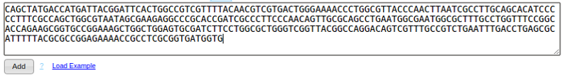
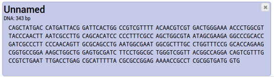
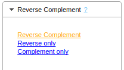
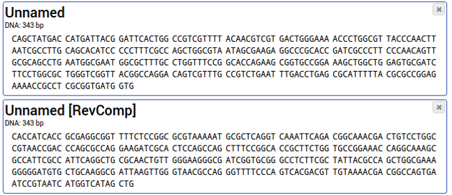

How to create a Reverse Complement Sequence
See also What is a reverse complement sequence?
- Enter your DNA sequence into the text box and click the button "Add". Your new entry is added.

You can enter all sequences you need to convert at this point. If you don't have any sequences and just want to
try it out, you can import some example sequences by clicking on "Load Examples", next to the "Add"-Button.
For more details regarding data entry and acceptable formats see Help>Sequence
Import
- Select all your entries that you want to convert by clicking on them. Selected entries change the background
color.

To deselect an entry, click on it again; the background changes to white again. You can select multiple entries
to convert them all at once.
For more details about selecting entries see Help>Selecting entries
Help>Renaming entries describes how to change an entry name.
- After selecting the entries, choose the appropriate command in the tool bar: "Reverse Complement > Reverse
Complement".

The reverse complement gets inserted as a new entry, with the tag [RevComp] added to its name.

The same workflow can be used to generate reverse sequences and complement sequences.
For an explanation about Reverse Complement sequences see What is a reverse complement
sequence?
Back to Documentation index